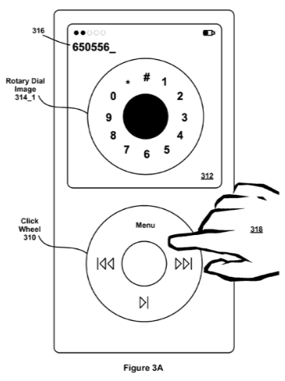
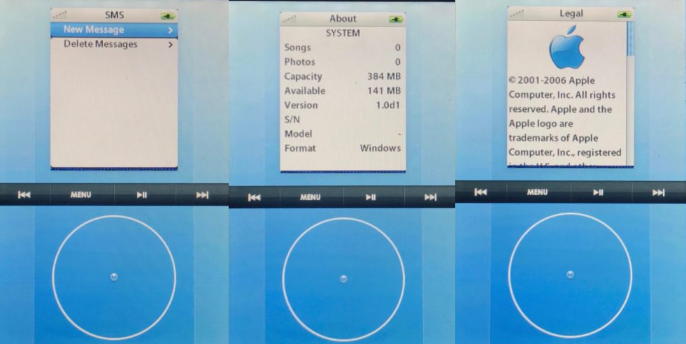
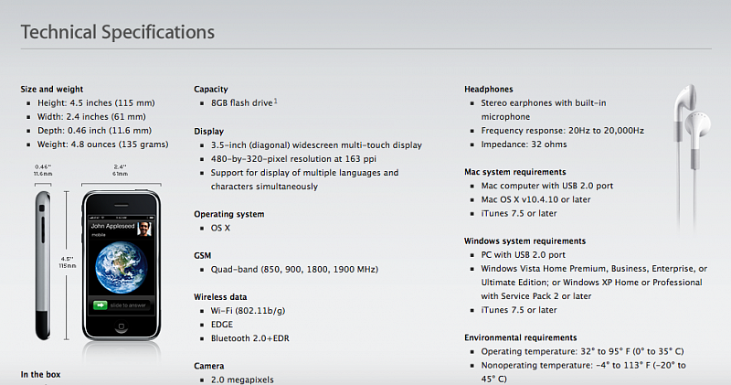

История создания первого iPhone
В 2005-2007 году iPod для Apple был как сегодня iPhone для Apple, т.е. на его долю приходилась большая часть выручки. Именно в 2005 году начинается разработка iPhone. Изначально планировалось использовать наработки проекта Purple 1, т.е. iPod должен был выступать в качестве базы iPhone.
Purple 1
Параллельно с разработкой первого iPod Стива Джобса не покидала идея создать собственный телефон. Предполагалось что iPod будет служить основой, а фирменное колесо ClickWheel предполагалось использовать для управления системой.

Телефон должен был полностью быть лишен привычных кнопок управления, что на тот момент это было непривычно. Судя по патентам набор номера должен был происходить как на старых проводных телефонах. Интересно, такой вариант вполне мог бы иметь право на жизнь. Самая большая проблема у подобного решения - это работа с текстом. Прокручивать колесико для набора нужной буквы не самая лучшая идея, в Apple это понимали и предлагали использовать в качестве помощи подсказки, что все равно было бы неудобно. Проект был закрыт в 2002 году.
Причем тут iPad?
Мало кто знает, но идея сенсорного экрана в iPhone взята с iPad. Идея создать собственный планшет появилась раньше идеи создания iPhone. Вот что говорил Стив Джобс на конференции D: All Things Digital в 2010, проводимой WSJ:"Скажу по секрету. Вообще-то, я начал с планшета. У меня появилась идея избавиться от клавиатуры, чтобы можно было печатать прямо на стеклянном мультитач-дисплее. И я поинтересовался у наших ребят, можем ли мы предложить такой стеклянный мультитач-дисплей. На котором можно было бы печатать, просто положить на него руки и печатать. И через шесть месяцев они пригласили меня и показали прототип такого экрана. А я отнёс его одному из наших замечательных парней, которые занимаются пользовательскими интерфейсами. Через несколько недель он позвал меня — у него была готова инерционная прокрутка. Увидев ленту, инерционную прокрутку и пару других вещей, я подумал: «Бог мой, да мы можем сделать из этого телефон!» И отложил проект планшета на полку. Потому что важнее был телефон. Следующие несколько лет мы работали над iPhone".
Purple 2
Разработка первого iPhone началась в начале 2005. В феврале Стив Джобс начинает переговоры с AT&T. Для выпуска собственного телефона компании необходимо было заручится поддержкой оператора. На начало переговоров у Apple не было даже прототипа, iPhone тогда был на стадии обсуждения. Переговоры затянулись на год, но в итоге оператор дал свое согласие. Параллельно шла разработка телефона. Первая половина 2005 была временем приготовлений: набор инженеров, обсуждение идей. Непосредственно разработка начинается в конце 2005 года. У iPhone должен был быть сенсорный экран и минимум кнопок. Идея сенсорного экрана взята от iPad. Вся сложность была в интерфейсе. Стив Джобс ненавидел стилусы, вот что он про них говорил: «Если ты предлагаешь стилус, ты покойник». Пользователь должен был взаимодействовать с телефоном с помощью пальца. Компания пошла двумя путями: P1 стало кодовым названием телефона, разрабатываемого с использованием фирменного колеса управления iPod, а P2 - альтернативной новинки с использованием мульти-сенсорного экрана. Разработка P1 была остановлена спустя полгода. Тони Фаделл, ответственный за P1, признал что он и его команда не смогли найти простого решения для набора номера. Недавно в сети всплыли скриншоты прототипа первого iPhone. Не понятно чей это прототип. С одной стороны в качестве управления используется колесо прокрутки iPod, да и вообще весь интерфейс iPod, но это все на сенсорном экране. Возможно это все-таки один из прототипов оболочки P2.

Все силы были брошены на разработку P2. В 2005 году Apple покупает небольшую компанию FingerWorks, которой принадлежали патенты на технологию мультитач. Т. к. управление телефоном должно осуществляться с помощью пальца, возникли определенные трудности, например как набирать текст. Некоторые сотрудники предлагали внедрить физическую кнопочную или QWERTY клавиатуру, но Стив Джобс наложил на эти идеи вето."Кнопочная клавиатура кажется простым решением, но она ограничивает наши возможности. Подумайте обо всех тех инновациях, которые мы смогли бы внедрить, если бы вывели клавиатуру на экран с помощью софта. Давайте сделаем ставку на это, и тогда мы найдем способ заставить ее работать".В результате получился аппарат, который мог показывать разную раскладку в зависимости от задачи. Многие решения были новшеством для 2007, например датчик приближения.
Дизайн
Изначально в iPhone планировали установить пластиковый экран, но Джобс решил сделать стеклянный экран, так телефон казался бы более солидным и изящным. Первоначальный дизайн iPhone не понравился Стиву Джобсу и было принято решение полностью изменить дизайн. Пришлось даже менять расположение внутренностей аппарата. В итоге появился смартфон с изящным металлическим корпусом и металлической рамкой, которая соединяла экран и корпус.

iPhone OS
В первой версии iOS, тогда еще iPhone OS, телефон проигрывал своим конкурентам по функционалу. Что же в нем было такого особенного? С ним было приятно работать, все приложения запускались плавно и работали быстро, а некоторые привычные вещи были упрощены. Операционная система была полностью закрытой, опять же по инициативе Стива Джобса, он хотел полностью контролировать телефон. Даже App Store не было, возможность устанавливать приложения появилась только в iPhone 3G. В Apple не знали как назвать свою операционную систему, поэтому они говорили «iPhone работает на OS X». В спецификациях также была указана OS X в качестве операционной системы.
